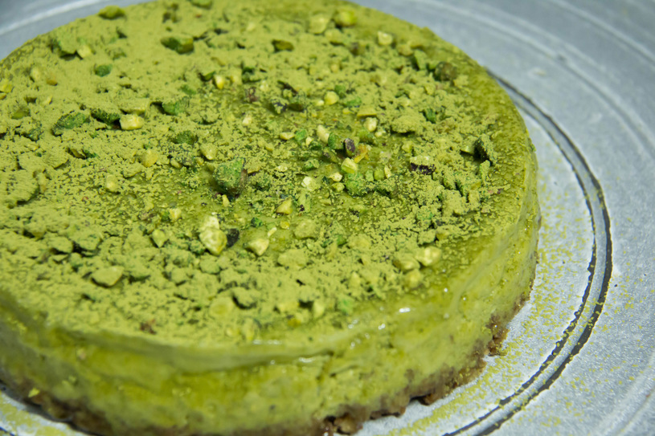

150 g ciastek kakaowych z nadzieniem czekoladowym (np. markizy)
30 g masła, w temperaturze pokojowej
300 g niesolonych orzeszków pistacjowych (waga bez łupinek)
400 g mleka słodzonego skondensowanego
2 łyżeczki wody różanej lub ekstraktu z wanilii
2 jajka
250 g serka mascarpone
250 g twarogu tłustego lub półtłustego, zmielonego przynajmniej dwukrotnie

Przygotowanie:
Ciastka (razem z nadzieniem) i masło wrzucić do malaksera i zmiksować na jednolitą masę o konsystencji mokrego piasku.
Tortownicę o średnicy 21 cm wyłożyć papierem do pieczenia, samo dno. Na papier wysypać ciasteczka. Wyrównać, dokładnie wklepać w dno formy i schłodzić przez pół godziny w lodówce.
Pistacje umieścić w malakserze i zmiksować do otrzymania mąki pistacjowej.
Do pistacji dodać słodzone mleko skondensowane, zmiksować. Powinna powstać gęsta słodka pistacjowa masa,
Masę przełożyć do miksera. Dodać jajka, jedno po drugim, miksując po każdym dodaniu.
Dodać serek mascarpone, twaróg, wodę różaną/ekstrakt z wanilii i zmiksować do otrzymania gładkiej masy serowej.
Masę serową przelać na schłodzony spód. Wyrównać.
Piec w temperaturze 150ºC przez około 60 minut, bez termoobiegu. Przestudzić w stygnącym piekarniku.